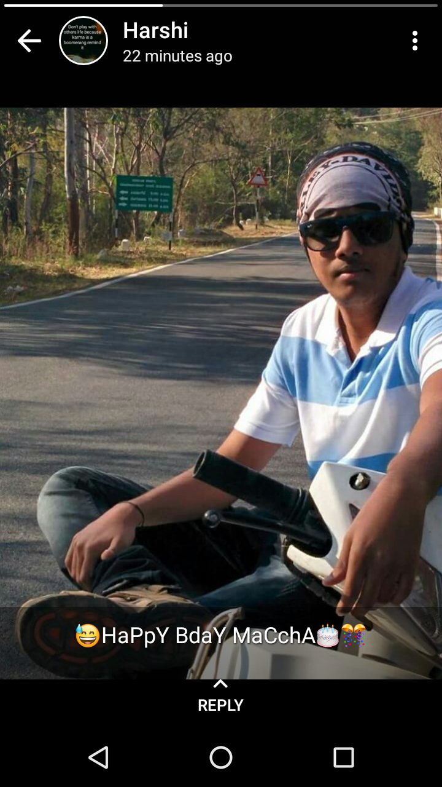
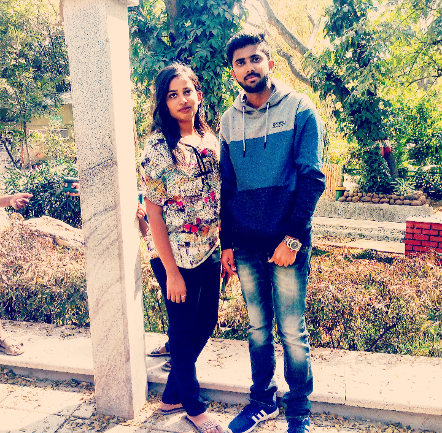
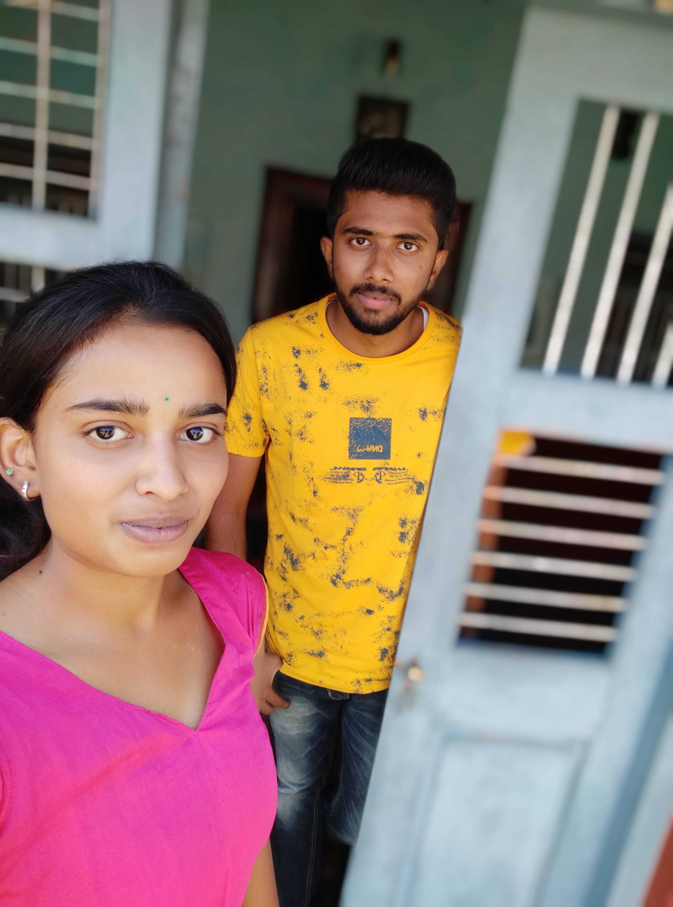
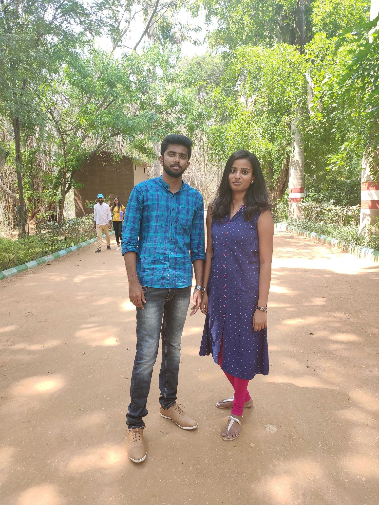
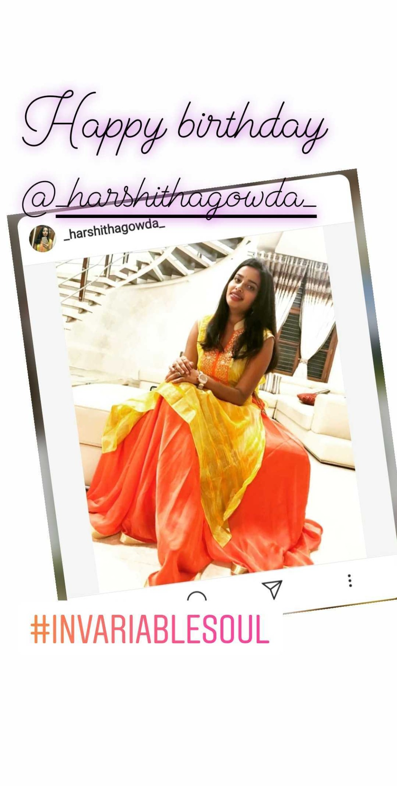
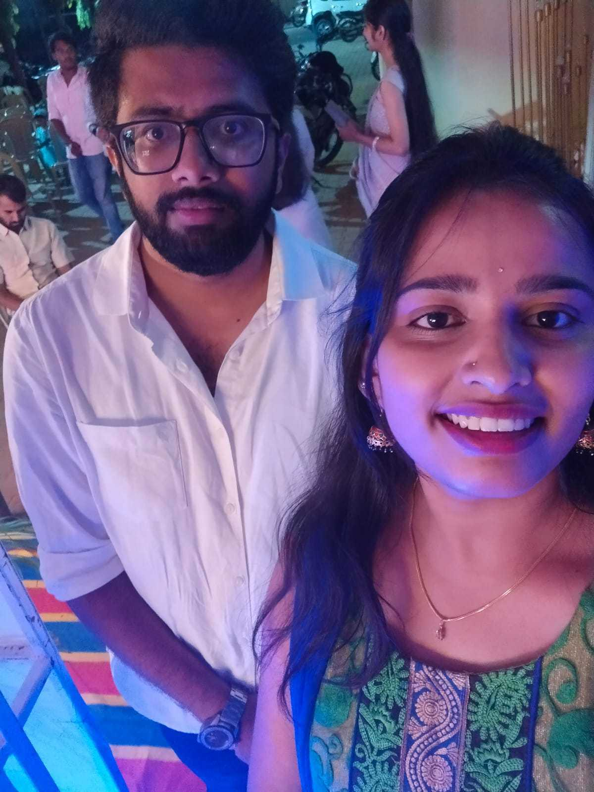
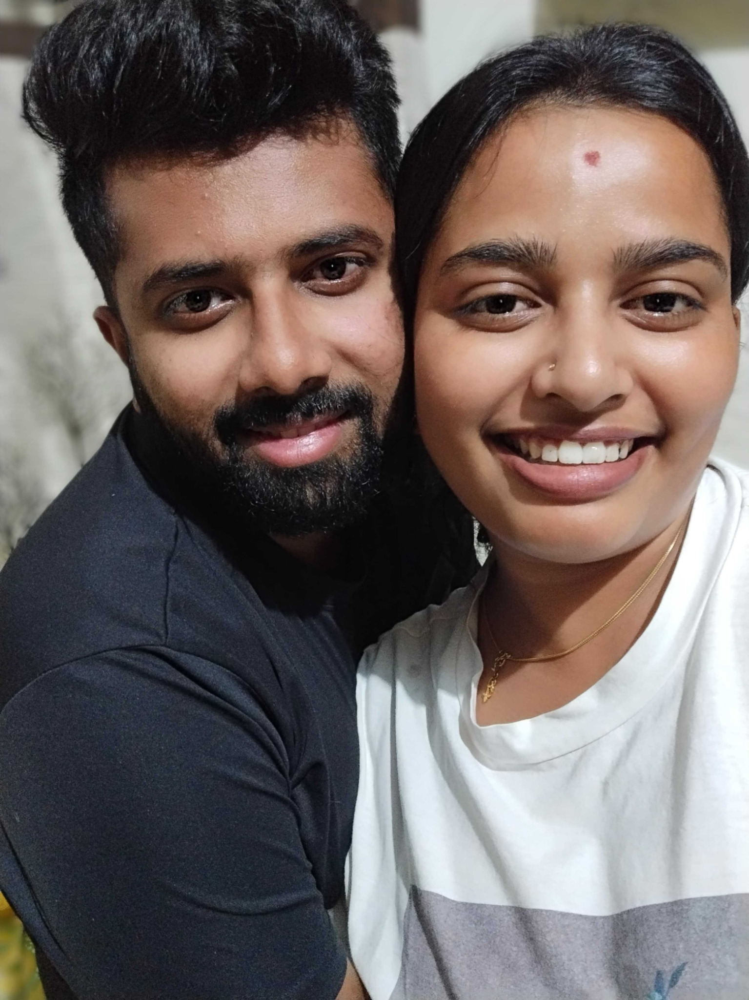

Little moments we kept
Our memories ♡
Every picture holds a small piece of our story — from the early birthday wishes and first meetups to finding our way back to each other. These are our real moments, exactly as you shared them.

19 July 2018 · Her birthday wish
The first birthday story you posted for me. A small wish that became a lovely memory.
The first birthday story you posted for me. A small wish that became a lovely memory.

15 January 2019 · First meetup in Mysore
After time apart, a familiar face and a day worth remembering.
After time apart, a familiar face and a day worth remembering.

15 January 2019 · One more frame
Another photograph from that first meetup — a memory from the beginning of finding our way back.
Another photograph from that first meetup — a memory from the beginning of finding our way back.

7 April 2019 · Our first photo at home
Just a simple photograph at home, now one of the treasured pieces of our story.
Just a simple photograph at home, now one of the treasured pieces of our story.

27 April 2019 · Our second meetup
Another day together, another memory to keep close.
Another day together, another memory to keep close.

27 November 2019 · My first birthday story for you
My first Instagram birthday wish for you — a little way of showing what words couldn't fully say.
My first Instagram birthday wish for you — a little way of showing what words couldn't fully say.

January 2024 · Our journey began again
After all the years, the silence and the distance, we met again and started a new chapter.
After all the years, the silence and the distance, we met again and started a new chapter.

10 August 2026 · Our first couple photo
From school benchmates and best friends to becoming us. A milestone I'll always hold close.
From school benchmates and best friends to becoming us. A milestone I'll always hold close.
A small collection of real photographs and memories, shared with love. ♡